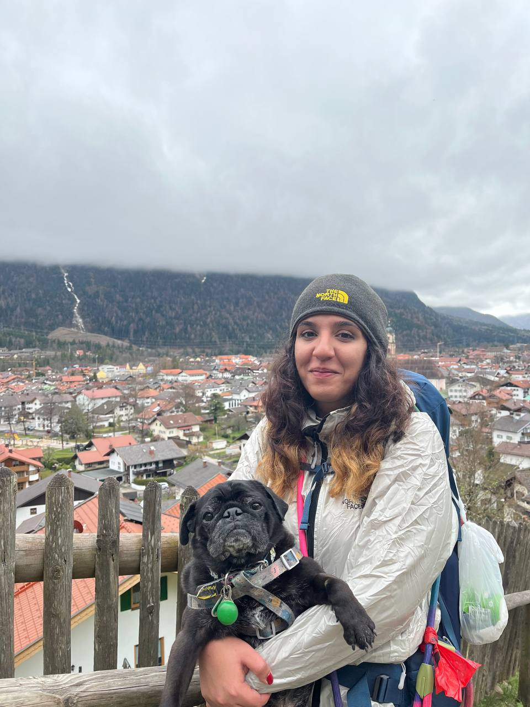

Mitra Maleki
MSc Astrophysics Student • LMU Munich
MSc Astrophysics Student • LMU Munich
At five, I was NASA's biggest fan, or at least I was completely sure I was. Whenever an observatory in Tehran held an event, my parents and I were there, and on the days in between, my idea of fun was a National Geographic documentary.
Over the years, that fascination slowly turned into a goal. I no longer just wanted to watch the people on screen explaining unbelievable science; I wanted to become one of them. That is what pushed me to study hard at school and get into the best university in Iran, Sharif University of Technology, where I studied physics and where the early Universe captured my curiosity. The same curiosity later brought me to Munich, where I am now doing my MSc in Astrophysics at LMU.
Today, I am still finding my own place in all of this. I have always been drawn to the big questions, from how the Universe began to how the elements and molecules around us were made, and along the way I became a bit obsessed with machine learning. What I enjoy most is going back and forth between pen-and-paper physics and code.
LMU Munich • 2025–2026
Through the Multi-Messenger Astrophysics seminar with Prof. Daniel Gruen, I worked on the follow-up of gamma-ray bursts, fast X-ray transients and supernovae with the 2.1 m Wendelstein telescope, reducing and analyzing the images. This work contributed to two refereed papers and five GCN Circulars.
Iran National Observatory • Summer 2024
With Dr. Amin Farhang, I wrote Python tools that help astronomers plan observations (finding charts, ephemerides and sky-brightness estimates) and measure star magnitudes in images. The code is on GitHub.
Sharif University of Technology & IPM • 2023–2024
I studied inflation and cosmological perturbations following Weinberg's Cosmology with Dr. Ali Akbar Abolhasani, with whom I also did my Bachelor project on primordial black holes. Before that, I spent a summer at IPM with Dr. Hassan Firouzjahi working through general relativity and cosmology.
Third author on five circulars reporting Wendelstein optical/NIR observations (2025–2026):
Astrophysical Flows Workshop (Pencil Code), IPM Tehran · 2025
Giambiagi Winter School on Cosmology, ICTP & Universidad de Buenos Aires · 2023
Cosmology Workshop: From Theory to Observation, IPM Tehran · 2023
Head Teaching Assistant, Physics III, Sharif University of Technology · 2023
Outside academia, I enjoy playing the viola, hiking with my dog, and backpacking. I believe that traveling is one of the best forms of education. I try to enjoy life to the fullest while having the opportunity to study at great universities, follow my curiosity, and dedicate my life to my love for science.
My dog has been with me for more than ten years now, so he has been there through almost every step of my education, from my university entrance exams in Iran to my Bachelor's degree and eventually moving with me to Germany for my Master's. He is probably my longest-standing academic partner.
He might not understand physics in quite the way we do, but he has been there through all of it.
One day, I hope he can sit with his dog friends at the park, sniff around for a while, and proudly tell them, "My mom is a scientist."
